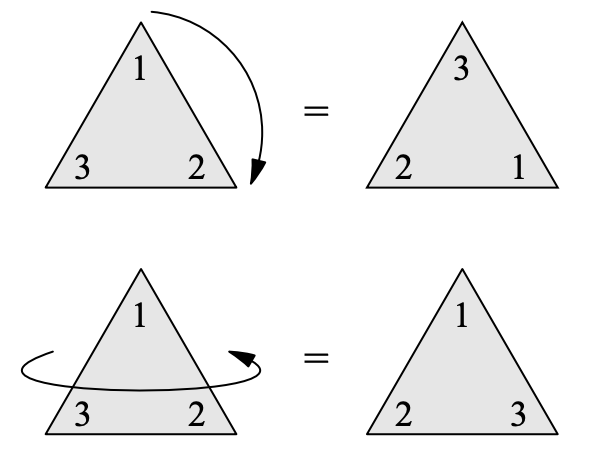
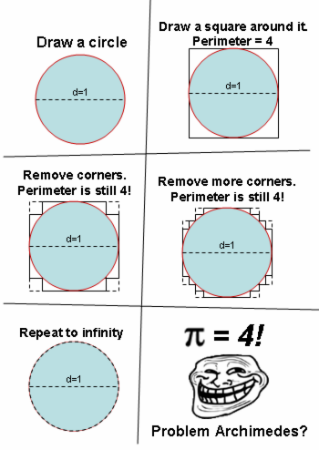
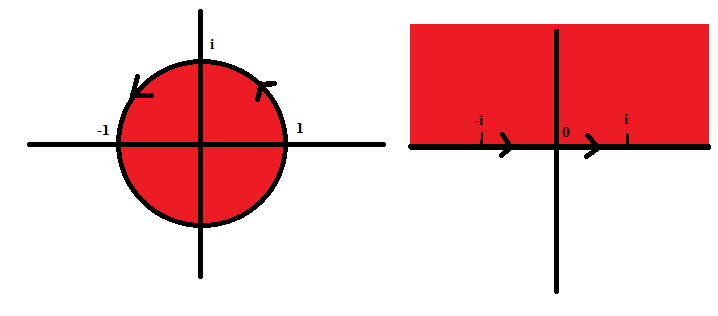
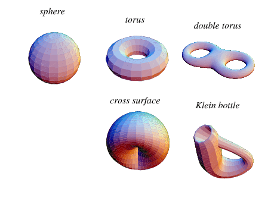

What is (pure) mathematics?
Athar Abdul-Quader
Junior Seminar Feb 2024
What is mathematics?
“Mathematics is what mathematicians do.”
So what do mathematicians do?
Areas of mathematics
- Algebra: the study of abstract structures including groups, rings, fields, vector spaces, …
- Analysis: the rigorous treatment of calculus, including of the calculus of complex functions.
- Start with: “What even is a real number?”
- Topology: the study of space, specifically properties of space that are preserved under continuous deformations
- “A coffee mug and a donut are the same thing, actually.”
Aside
Quick poll: how do you eat corn?
- Typewriter style (left-to-right)
- Rotary style (around in circles)
Algebra
- A structure is a set \(X\) with an operation \(*\).
- That means, for each \(a, b \in X\), we can compute \(a * b \in X\) (\(X\) is closed under \(*\).)
- Generalizes everything.
- Typical examples?
Symmetry

(Carter, Visual Group Theory) How many “symmetries” of the triangle are there?
Symmetry
- What’s the set?
- What is the operation?
- What properties can we infer about this operation?
Exercise: what are the symmetries of a square?
Symmetries
- A symmetry is a function (on the vertices) preserving some sort of structure (in this case, preserving the adjacencies / non-adjacencies of the triangle or square.)
- Symmetries of the triangle: three rotations (including identity), three reflections
- Operation? Function composition.
- Applying one symmetry and then the other.
- Properties?
Equations
- Which equations of the form \(ax = b\) can be solved?
- What if we insist that \(x\) must be an integer?
- What if we insist that \(x\) must be a positive integer?
- What if …?
- What properties of the numbers \(a\) and \(b\) allow us to solve these kinds of questions?
- What properties of our number systems allow us to solve these kinds of questions?
Solutions
\(ax = b\) is solvable if:
- \(a\) has an inverse (\(z\)) in our number system, ie \(za = 1\).
- \(z(ax) = (za)x\), that is, \(*\) is associative
- \(1x = x\); that is, \(1\) is the identity element.
A set \(X\) with an operation \(*\) such that there is an identity element, every \(a \in X\) has an inverse, and \(*\) is associative is called a group.
Example 1
\(B = \{ 0, 1 \}\), with the operation of \(+_2\) (addition mod 2)
\[ \begin{array}{c|c|c} + & 0 & 1 \\ \hline 0 & 0 & 1 \\ 1 & 1 & 0 \end{array} \]
Example 2
\(S = \{ -1, 1 \}\) with the operation of \(\times\) (regular multiplication).
\[ \begin{array}{c|c|c} \times & 1 & -1 \\ \hline 1 & 1 & -1 \\ -1 & -1 & 1 \end{array} \]
What do we notice?
A rose
What’s in a name? That which we call a rose by any other name would smell just as sweet.
Suppose \(G_1\) is a group with operation \(*_1\), and \(G_2\) is a group with operation \(*_2\). What would it mean for \(G_1\) and \(G_2\) to be the “same” group?
Isomorphisms
\(G_1\) is isomorphic to \(G_2\) , denoted \(G_1 \cong G_2\), if there is a function \(f: G_1 \to G_2\) such that:
- \(f\) is a bijection (one to one and onto function)
- \(f\) converts \(*_1\) to \(*_2\): \(f(x *_1 y) = f(x) *_2 f(y)\)
Can you find an isomorphism between \(B = \{ 0, 1 \}\) and \(S = \{ -1, 1 \}\)?
Other Groups
- For each \(n\), the group \(\mathbb{Z}_n = \{ 0, 1, \ldots, n - 1 \}\), operation \(+_n\). (These are called cyclic groups.)
- For each \(n \geq 3\), the dihedral group \(D_n\), the group of symmetries of a regular \(n\)-gon.
- \((\mathbb{Z} / n \mathbb{Z})^{\times}\): the set of \(x < n\) that are relatively prime to \(n\).
Infinite groups?
- \(\mathbb{Z}\) under addition
- \(\mathbb{Q}\) (all rational numbers)
- \(\mathbb{R}\) (all real numbers)
- \(GL(n, \mathbb{R})\) the general linear group of degree \(n\): set of all invertible \(n \times n\) matrices
- Many subgroups of \(GL(n, \mathbb{R})\): ex the matrices with determinant 1 \(SL(n, \mathbb{R})\).
- Lots of geometric intuition on these for \(n = 2, 3\).
Other structures?
- We can do more than just add integers: we can multiply them too. (rings)
- \(\mathbb{Q}\): every non-zero rational number has a multiplicative inverse (fields)
- Ordered rings / fields (if \(x < y\), then \(x + a < y + a\))
Other areas of mathematics
Analysis

Complex Analysis

- The study of functions of a complex variable.
- Much better behaved than real functions!
Topology


Philosophy
- Ontology: what are the mathematical objects we’ve discussed, really?
- Epistemology: how do we obtain mathematical knowledge?
Logicisim
- All of mathematics is reduced to logic.
- Frege (1800s), Russell + Whitehead (early 1900s))
- (Not very popular today.)
Platonism
- Mathematical objects exist abstractly
- Eternal / unchanging
- Exist outside of our experience
- Problem: how do we come to know about them?
Formalism
- Symbols on paper, manipulated according to some rules
- Define numbers formally using set theory:
- 0 is defined to be \(\emptyset\)
- \(1\) is defined to be \(\{ 0 \}\), \(2\) is defined to be \(\{ 0, 1 \}\) (Von Neumann)
- Or: \(2\) is defined to be \(\{ \{ 0 \} \}\) (Zermelo)
- Prove theorems about equivalence of definitions.
- Problem: why is mathematics so useful then?
- “Unreasonable effectiveness of mathematics.”
Intuitionism
- There are no mathematical truths except those we prove directly.
- Ex: we don’t use proof by contradiction.
- Only those objects which can be explicitly constructed exist.
- What does that mean?
- Often: “finite” and/or “computable” objects exist.
Structuralism
- Mathematics really describes structures.
- Mathematical objects are defined by their relation to the larger structure.
- First: \(\mathbb{N} = \{0, 1, 2, \ldots \}\) is the smallest set containing 0, closed under successors.
- However you represent the natural numbers, all that matters are those properties.
Structuralism
- Similarly: “The real numbers \(\mathbb{R}\) are the unique complete ordered field.”
- First need to describe a construction of the real numbers (to show that a complete ordered field exists).
- There are multiple such constructions! (Dedekind, Cauchy)
- Then: whenever we prove anything about reals, we just use the fact that they are a complete ordered field.